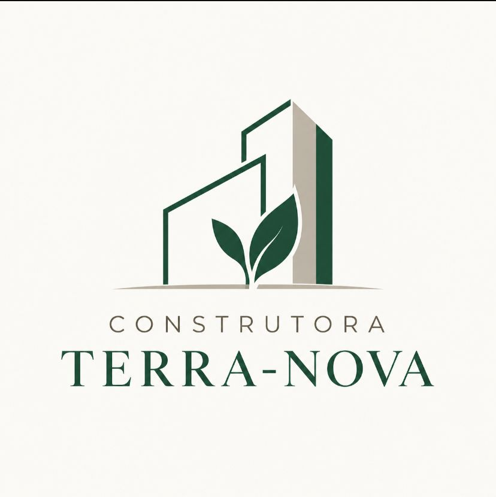
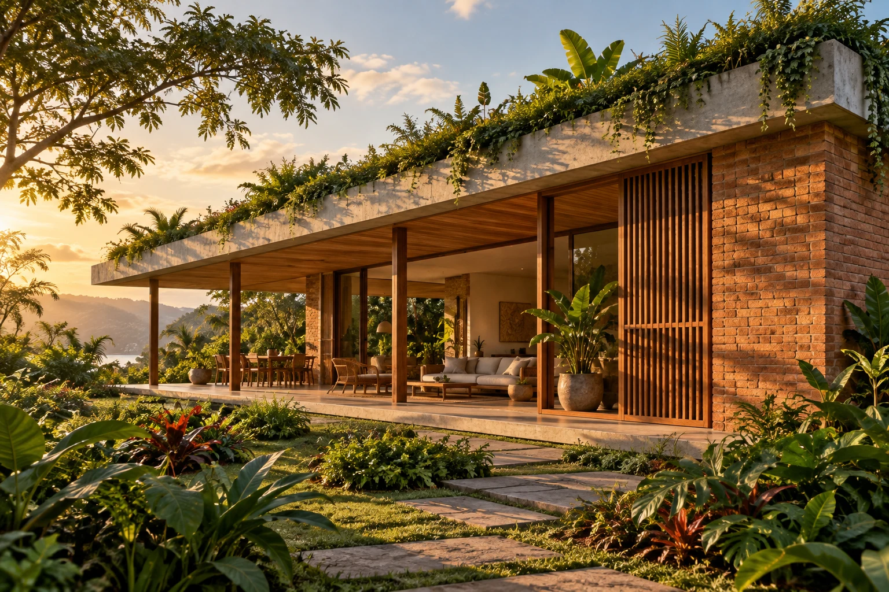
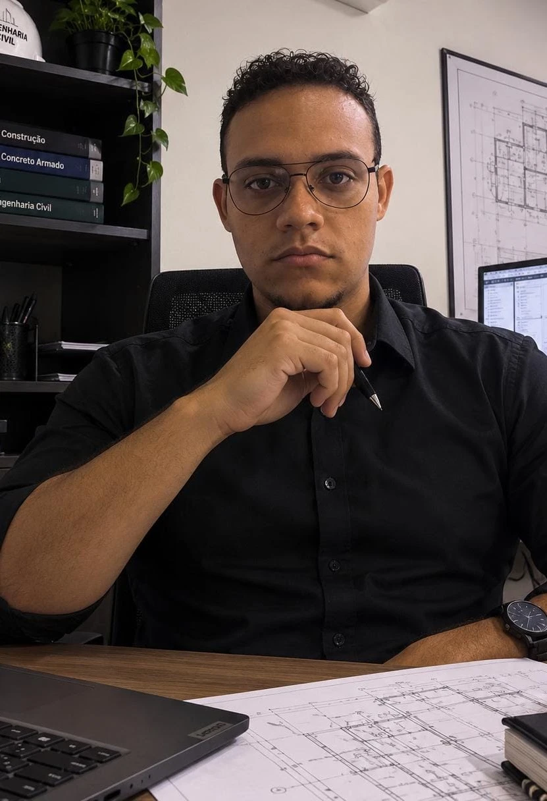

Projetos residenciais
Planejamento dos espaços, estudo de iluminação e ventilação natural e integração das soluções ambientais desde o início.
PENSAR ANTES DE CONSTRUIR
ENGENHARIA COM PROPÓSITO
Casas pensadas para viver melhor. Uma proposta que une boa arquitetura, execução cuidadosa e escolhas mais conscientes.

01 — NOSSA ESSÊNCIA
A Terra-Nova nasce da ideia de aproximar a construção civil de uma relação mais responsável com o meio ambiente.
Nossa proposta reúne projetos, execução de residências e reformas, com atenção ao planejamento, à qualificação da mão de obra e ao uso dos materiais. Sustentabilidade entra nas decisões de cada etapa: do desenho da casa à organização do canteiro.
Buscamos conciliar conforto, viabilidade econômica e redução de impactos. Cada solução deve fazer sentido para o terreno, para o projeto e para quem vai morar.
02 — O QUE PROPOMOS
Um escopo claro para cada necessidade.
As soluções são definidas conforme o projeto.
Planejamento dos espaços, estudo de iluminação e ventilação natural e integração das soluções ambientais desde o início.
PENSAR ANTES DE CONSTRUIRProposta de execução com equipes qualificadas, organização do canteiro e acompanhamento de prazo, materiais e qualidade.
CUIDADO EM CADA ETAPAAdequação de ambientes e acompanhamento da obra, buscando aproveitar o que já existe e reduzir desperdícios.
NOVAS POSSIBILIDADES03 — ESCOLHAS QUE FAZEM DIFERENÇA
Não existe uma solução única para toda obra. Conheça as alternativas previstas na nossa proposta e os cuidados para aplicá-las.
Escolher melhor começa por entender materiais, contexto e desempenho.
Blocos prensados que dispensam a etapa de queima usada em produtos cerâmicos. A proposta é avaliar seu uso para reduzir impactos associados a essa etapa e racionalizar a execução.
A escolha depende da qualidade do produto, da aplicação prevista e da avaliação técnica. A fabricação do cimento e o transporte também entram na análise ambiental.
Estudo de alternativas com materiais reciclados ou substituições parciais de componentes, conforme disponibilidade e desempenho exigido.
A composição deve ser validada tecnicamente para cada uso. Não pressupomos redução de impacto, maior resistência ou durabilidade sem ensaios e dados que sustentem essas conclusões.
Previsão de coleta e armazenamento de água da chuva para usos não potáveis compatíveis, como limpeza externa e irrigação.
Dimensionamento, tratamento, identificação das tubulações e manutenção fazem parte do planejamento do sistema.
Orientação da casa, sombreamento, iluminação natural e ventilação cruzada considerados desde o projeto. Sistemas solares podem ser avaliados conforme a viabilidade.
O resultado depende do clima, do terreno, dos hábitos dos moradores e das soluções adotadas.
Uma alternativa a estudar para integrar vegetação à cobertura e contribuir para o conforto e o manejo da água da chuva.
Exige análise de cargas, impermeabilização, drenagem, escolha de vegetação e um plano de manutenção.
Planejamento de compras, armazenamento adequado, separação dos resíduos e busca por reaproveitamento e destinação apropriada.
Nossa meta é reduzir perdas e acompanhar os resultados, sem prometer ausência total de resíduos.
04 — QUEM FAZ ACONTECER
A estrutura de equipe proposta para a Terra-Nova conecta planejamento, suprimentos e execução.

Alinha o planejamento do negócio, a viabilidade dos projetos e os compromissos ambientais.

Coordena o recebimento e armazenamento de materiais e a gestão de resíduos, buscando um canteiro organizado e com menos desperdício.
Avalia fornecedores, qualidade, origem, custos e prazos dos materiais previstos para cada obra.

Acompanha as equipes, o cronograma e a aplicação das soluções definidas em projeto, com atenção à qualidade da execução.
05 — VAMOS CONVERSAR
Quer conhecer melhor a proposta da Terra-Nova?
Fale com a equipe responsável pelo projeto.
Rua Major Felício Tarabay, 274
Bosque · Presidente Prudente / SP
Este site apresenta uma proposta acadêmica de empresa. A imagem principal é uma ilustração conceitual; não constitui portfólio de obras realizadas. As soluções descritas são possibilidades a avaliar por profissionais habilitados, conforme as condições de cada projeto.
Para aprofundamento, consulte os materiais institucionais do Ministério das Cidades, do CETEM e do Ministério do Meio Ambiente. Esses portais são caminhos de pesquisa; não representam certificação ou endosso da Terra-Nova.